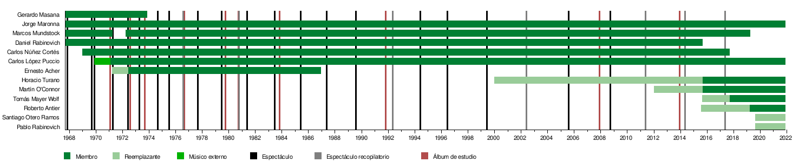

Integrantes
Primera formación (1967-1969)
Gerardo Masana: fundador, luthier, cuerdas, vientos, voz y metal.
Marcos Mundstock: presentación, vientos, voz.
Jorge Maronna: cuerdas, voz.
Daniel Rabinovich: guitarra, vientos, latín, alt-pipe, bass-pipe, percusiones, voz.
Segunda formación (1969-1971)
Gerardo Masana: fundador, luthier, cuerdas, vientos, voz y metal.
Marcos Mundstock: presentación, vientos, voz.
Jorge Maronna: cuerdas, voz.
Carlos Núñez Cortés: teclados, vientos, voz.
Daniel Rabinovich: guitarra, vientos, latín, alt-pipe, bass-pipe, percusiones, voz.
Tercera formación (1971-1973)
Gerardo Masana (fallece el 23 de noviembre de 1973)
Marcos Mundstock (abandona el grupo temporalmente en 1971)
Jorge Maronna: cuerdas, voz.
Carlos López Puccio: latín, teclados, percusiones, voz.
Carlos Núñez Cortés: teclados, vientos, voz.
Ernesto Acher: vientos, teclados, voz (ingresa primero como suplente de Marcos Mundstock como presentador, y luego continúa como integrante fijo)
Daniel Rabinovich: guitarra, vientos, latín, alt-pipe, bass-pipe, percusiones, voz.
Cuarta formación (1973-1986)
Marcos Mundstock
Jorge Maronna
Carlos López Puccio
Carlos Núñez Cortés
Ernesto Acher (dejó el grupo a fines de septiembre de 1986)
Daniel Rabinovich
Quinta formación (1986-2015)
Marcos Mundstock
Jorge Maronna
Carlos López Puccio
Carlos Núñez Cortés
Daniel Rabinovich (durante la temporada 2015 se tomó una licencia por enfermedad. Falleció el 21 de agosto de 2015)
Sexta formación (2015-2017)
Marcos Mundstock
Jorge Maronna
Carlos López Puccio
Carlos Núñez Cortés (se retiró el 24 de septiembre de 2017, tras el 50º aniversario de la fundación del grupo)
Horacio "Tato" Turano
Martín O'Connor
Séptima formación (2017-2019)
Marcos Mundstock
Jorge Maronna
Carlos López Puccio
Horacio "Tato" Turano
Martín O'Connor
Tomás Mayer Wolf
Octava formación (2019-presente)
Jorge Maronna
Carlos López Puccio
Horacio "Tato" Turano
Martín O'Connor
Tomás Mayer Wolf
Roberto Antier (en reemplazo de Marcos Mundstock, que fallece el 22 de abril de 2020)
Linea del Tiempo
